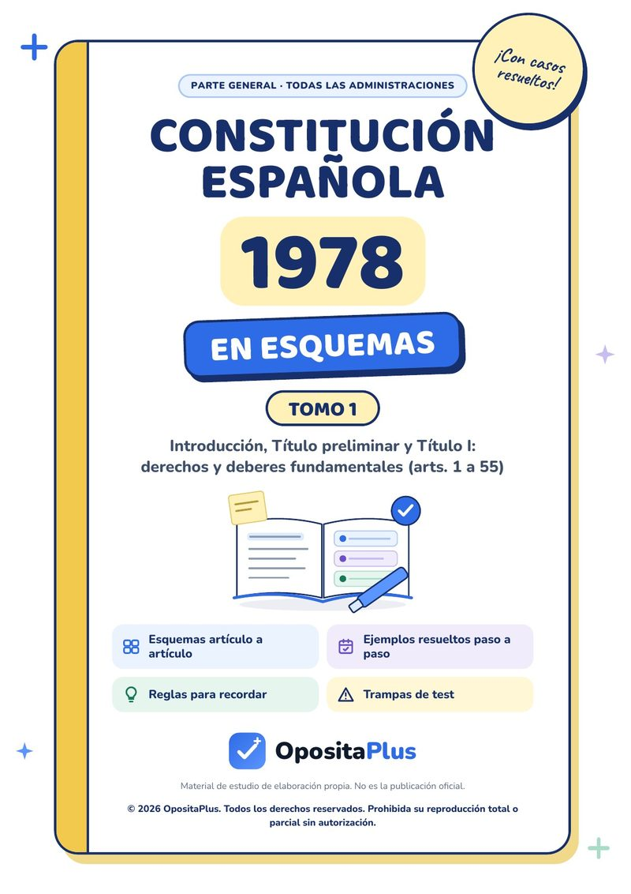
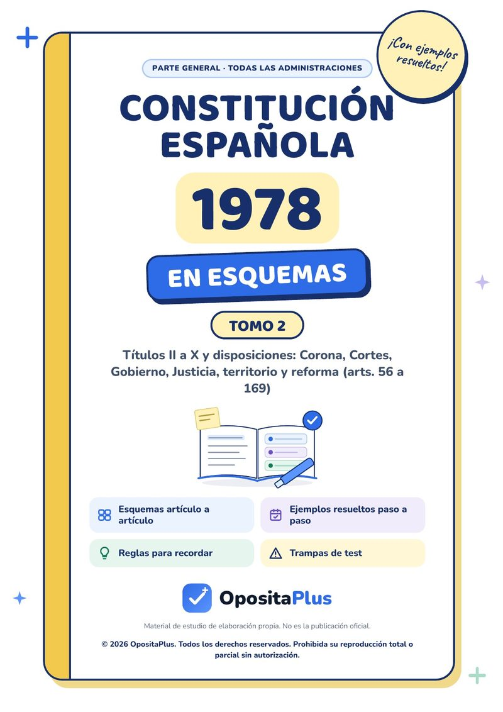
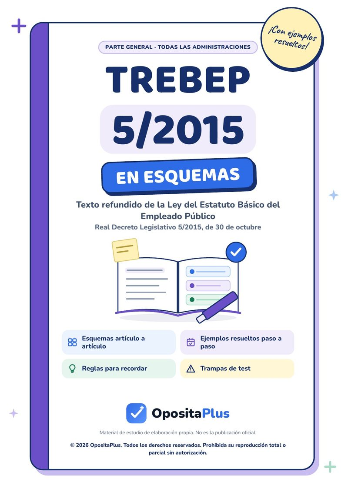
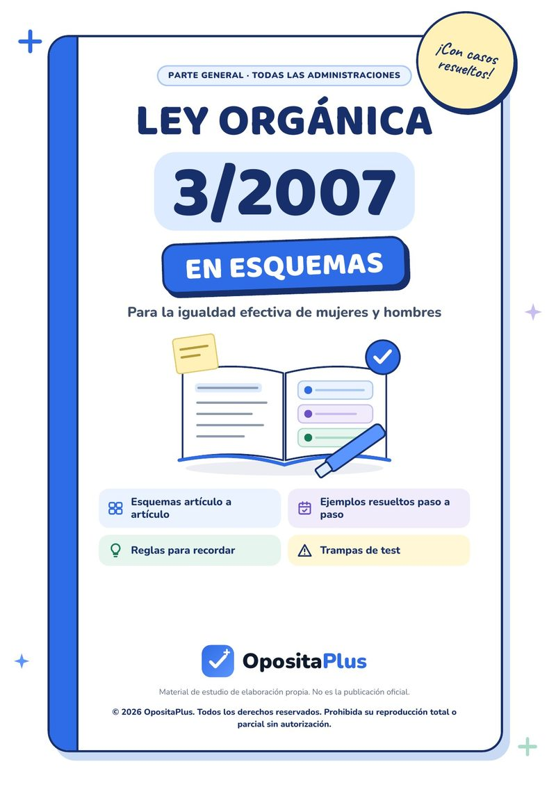
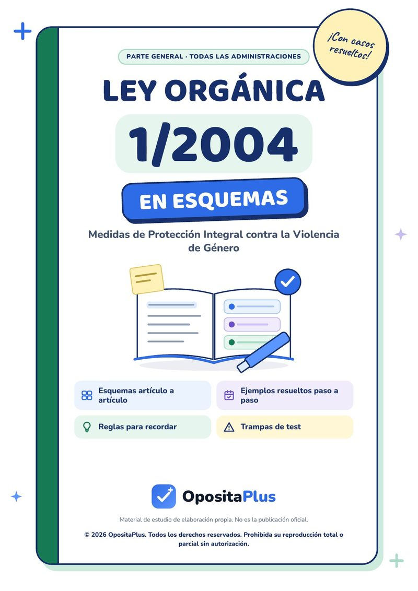
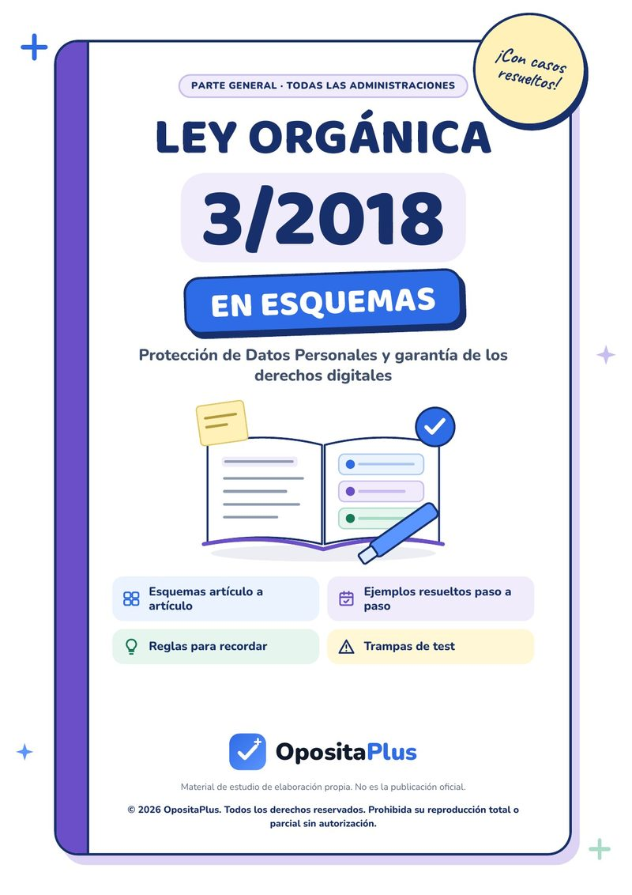
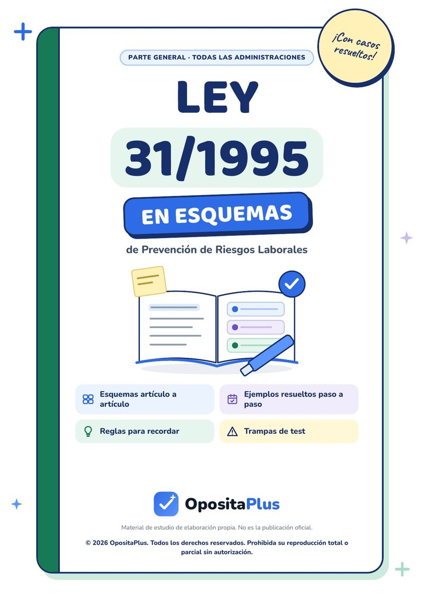

Test de oposiciones de Enfermería Pediátrica del SMS (Murcia)
Tests de la oposición de Enfermería Pediátrica del Servicio Murciano de Salud (SMS), con todo su programa en la app de tests de oposiciones de la Región de Murcia: 53 temas y 5.300 preguntas con corrección razonada, la teoría de cada tema detrás de cada fallo y simulacros cronometrados.
Empezar gratis en iPhone o Android Hacer un test de muestraDe dónde sale este temario
- Administración convocante
- Servicio Murciano de Salud
- Cuerpo o categoría
- Enfermería Pediátrica
- Convocatoria
- Resolución de la Dirección Gerencial del Servicio Murciano de Salud de 13 de noviembre de 2025 (parte específica) y Resolución de la Dirección Gerencial de 28 de noviembre de 2025 (parte general)
- Publicación
- BORM nº 275 de 27/11/2025, anuncio 5647 (específica) y nº 280 de 3/12/2025, anuncio 5794 (general)
- Programa
- Ver el programa oficial (PDF)
- Revisado el
- 28 de octubre de 2026
Test de Enfermería Pediátrica: 10 preguntas de muestra
Estas son preguntas reales del primer test del tema 1, el mismo que tienes gratis en la app. Pulsa la opción que creas correcta y verás al momento si aciertas y por qué.
-
Tema 1. Constitución Española y Estatuto de Autonomía de Murcia
1. Según el artículo 53.2 de la Constitución, el recurso de amparo ante el Tribunal Constitucional protege, además del artículo 14 y de la sección primera del capítulo II del Título I:
Ver la respuesta
Respuesta correcta: C) La objeción de conciencia del artículo 30
El art. 53.2 extiende el amparo a la objeción de conciencia del art. 30; los arts. 33, 35 y 43 quedan fuera de esa vía.
Constitución Española, art. 53.2
-
Tema 1. Constitución Española y Estatuto de Autonomía de Murcia
2. Conforme al artículo 18.2 de la Constitución, la entrada en un domicilio sin consentimiento de su titular solo es posible:
Ver la respuesta
Respuesta correcta: B) Con resolución judicial o en caso de flagrante delito
El domicilio es inviolable y solo cede ante el consentimiento, la resolución judicial o el flagrante delito.
Constitución Española, art. 18.2
-
Tema 1. Constitución Española y Estatuto de Autonomía de Murcia
3. Según el artículo 16.2 de la Constitución, nadie podrá ser obligado a declarar sobre:
Ver la respuesta
Respuesta correcta: A) Su ideología, religión o creencias
El art. 16.2 protege frente a la obligación de declarar sobre ideología, religión o creencias.
Constitución Española, art. 16.2
-
Tema 1. Constitución Española y Estatuto de Autonomía de Murcia
4. Según el artículo 43.2 de la Constitución, compete a los poderes públicos organizar y tutelar la salud pública a través de:
Ver la respuesta
Respuesta correcta: D) Medidas preventivas y de las prestaciones y servicios necesarios
El art. 43.2 combina las medidas preventivas con las prestaciones y servicios necesarios, y remite a la ley los derechos y deberes de todos.
Constitución Española, art. 43.2
-
Tema 1. Constitución Española y Estatuto de Autonomía de Murcia
5. La Constitución fija la composición del Congreso de los Diputados en:
Ver la respuesta
Respuesta correcta: B) Un mínimo de 300 y un máximo de 400 diputados
El art. 68.1 da la horquilla de 300 a 400; los 350 los fija la LOREG, no la Constitución.
Constitución Española, art. 68.1
-
Tema 1. Bioética, Código de 2025 y Comités de Ética Asistencial
6. El Código de Núremberg (1947) surgió de:
Ver la respuesta
Respuesta correcta: B) El juicio a médicos nazis ante un tribunal militar de EE. UU.
Lo formuló el tribunal militar estadounidense que juzgó en Núremberg a los médicos nazis (juicio de los doctores, 1946-1947).
Historia de la bioética · Código de Núremberg
-
Tema 1. Bioética, Código de 2025 y Comités de Ética Asistencial
7. El Código Ético y Deontológico de la Enfermera Española de diciembre de 2025 se estructura en:
Ver la respuesta
Respuesta correcta: C) Cinco capítulos y 108 artículos
Ámbito de aplicación, la enfermera y las personas, y la práctica, y la profesión, y la salud global: cinco capítulos con 108 artículos.
Código Ético y Deontológico de la Enfermera Española (2025) · índice
-
Tema 1. Bioética, Código de 2025 y Comités de Ética Asistencial
8. Según el art. 23 del Código de 2025, la enfermera obtiene el consentimiento por escrito:
Ver la respuesta
Respuesta correcta: D) En técnicas cruentas o invasivas o de riesgo significativo
La regla es el consentimiento oral, libre y voluntario; por escrito, en las técnicas cruentas o invasivas o de riesgo significativo de repercusión negativa.
Código Ético y Deontológico de la Enfermera Española (2025), art. 23
-
Tema 1. Bioética, Código de 2025 y Comités de Ética Asistencial
9. En el procedimiento deliberativo de Gracia, la deliberación sobre los valores en conflicto va precedida de la deliberación sobre:
Ver la respuesta
Respuesta correcta: B) Los hechos clínicos del caso
El orden es hechos, valores y deberes; los cursos de acción forman parte de la deliberación sobre los deberes.
D. Gracia, La deliberación moral (2001) · fases
-
Tema 1. Bioética, Código de 2025 y Comités de Ética Asistencial
10. Según el art. 9.2 de la LO 1/1996, de Protección Jurídica del Menor, se considera en todo caso que el menor tiene suficiente madurez para ejercer su derecho a ser oído cuando tenga:
Ver la respuesta
Respuesta correcta: C) Doce años cumplidos
La madurez la valora personal especializado, pero la ley la presume en todo caso a partir de los doce años cumplidos.
LO 1/1996, art. 9.2
Temario completo de Enfermería Pediátrica
Estos son los 53 temas tal y como los enumera la convocatoria. En la app, cada uno lleva su introducción, sus puntos clave, los artículos que hay que llevar de memoria y sus tests con corrección razonada.
Parte general
Constitución · Ley General de Sanidad y SMS · derechos y deberes de los usuarios · prestaciones del SNS · personal estatutario · profesiones sanitarias · prevención de riesgos · igualdad · bioética y secreto profesional · calidad · epidemiología · investigación cuantitativa y cualitativa · salud pública y demografía
- 1Constitución Española y Estatuto de Autonomía de Murcia100 preguntas
- 2Ley General de Sanidad, Ley 4/1994 y Servicio Murciano de Salud100 preguntas
- 3Derechos y deberes de los usuarios y transparencia en Murcia100 preguntas
- 4Prestaciones, cartera y Consejo Interterritorial del SNS100 preguntas
- 5Personal estatutario: clasificación, situaciones y disciplina100 preguntas
- 6Ordenación de las profesiones sanitarias y formación especializada100 preguntas
- 7Prevención de riesgos laborales y riesgo biológico100 preguntas
- 8Igualdad, violencia de género y no discriminación en salud100 preguntas
- 9Bioética, secreto profesional y protección de datos100 preguntas
- 10Calidad asistencial, EFQM, valor y GRADE100 preguntas
- 11Epidemiología y vigilancia en salud pública100 preguntas
- 12Investigación cuantitativa y estadística100 preguntas
- 13Investigación cualitativa100 preguntas
- 14Salud pública, indicadores y priorización100 preguntas
- 15Demografía sanitaria y envejecimiento100 preguntas
Ética, seguridad, metodología y gestión
Bioética, Código de 2025 y comités de ética · seguridad del paciente y Bacteriemia Zero · higiene, esterilización, aislamiento y residuos · enfermería basada en la evidencia · comunicación y entrevista · organización de los cuidados y urgencias en Murcia · NANDA, NIC, NOC, Henderson y Gordon · proceso enfermero · educación para la salud
- 1Bioética, Código de 2025 y Comités de Ética Asistencial100 preguntas
- 2Seguridad del paciente, higiene de manos y Bacteriemia Zero100 preguntas
- 3Higiene, esterilización, aislamiento y residuos100 preguntas
- 4Enfermería basada en la evidencia e investigación en cuidados100 preguntas
- 5Comunicación, entrevista clínica y trabajo en equipo100 preguntas
- 6Gestión, continuidad de cuidados y urgencias en Murcia100 preguntas
- 7Taxonomías NANDA-I, NIC y NOC, Henderson y Gordon100 preguntas
- 8Proceso enfermero y plan de cuidados100 preguntas
- 9Educación para la salud100 preguntas
Infancia, derechos y programas de salud
Derechos del niño · la especialidad y la atención centrada en la familia · alimentación y nutrición · farmacología y cálculo de dosis · PANA: niño sano y adolescente · vacunas · dolor · hospitalización infantil y Primeros 1000 días · cronicidad
- 10Derechos del niño, Carta Europea, Salud 21 y planes de infancia100 preguntas
- 11Historia de la pediatría, infancia y programa de la especialidad100 preguntas
- 12Alimentación y nutrición infantil100 preguntas
- 13Farmacología pediátrica y cálculo de dosis100 preguntas
- 14PANA (I): revisiones, crecimiento, cribados y accidentes100 preguntas
- 15PANA (II): adolescencia, sexualidad, drogas e IVE100 preguntas
- 16Inmunizaciones y calendario vacunal de Murcia100 preguntas
- 17Dolor infantil y guía de anestésicos locales100 preguntas
- 18Hospitalización infantil, aulas hospitalarias, 1000 días y RNAO100 preguntas
- 19Cronicidad infantil, atención domiciliaria y gestora de casos100 preguntas
Recién nacido
Neonato sano, transición e IHAN · método madre canguro · cribado neonatal e hipoacusia · prematuro y alto riesgo · cuidados centrados en el desarrollo · manipulación de leche materna y de fórmula
- 20Neonato sano, transición, IHAN y método canguro100 preguntas
- 21Cribado neonatal metabólico y de hipoacusia100 preguntas
- 22Neonato de alto riesgo, prematuridad y leche en la unidad100 preguntas
Cuidados del niño por procesos
Respiratorio y ventilación · digestivo y deshidratación · obesidad y desnutrición · maltrato infantil · salud mental · neurología · renal · endocrino y diabetes · locomotor · discapacidad · oncología · piel, heridas, quemaduras y ostomías · infecciones e IRAS
- 23Asma, bronquiolitis, laringitis y ventilación100 preguntas
- 24Gastroenteritis, deshidratación y problemas digestivos100 preguntas
- 25Desnutrición, sobrepeso y obesidad100 preguntas
- 26Maltrato infantil, acoso escolar y LOPIVI100 preguntas
- 27Salud mental infanto-juvenil, TCA y suicidio100 preguntas
- 28Convulsiones, epilepsia y guía de fiebre100 preguntas
- 29Riñón y vías urinarias en la infancia100 preguntas
- 30Diabetes, crecimiento y pubertad100 preguntas
- 31Aparato locomotor, vendajes e inmovilizaciones100 preguntas
- 32Discapacidad, dependencia y atención temprana100 preguntas
- 33Oncología pediátrica, citostáticos y extravasación100 preguntas
- 34Integridad cutánea, heridas, quemaduras y ostomías100 preguntas
- 35Procesos infectocontagiosos en el niño e IRAS-PROA100 preguntas
Atención inmediata, cirugía y final de la vida
Politrauma, intoxicaciones, quemado y shock · RCP neonatal y pediátrica (ERC 2025) · paciente quirúrgico y cirugía segura · final de la vida, duelo y cuidados paliativos pediátricos
- 36Atención inmediata y reanimación100 preguntas
- 37El niño quirúrgico y la cirugía segura100 preguntas
- 38Final de la vida, duelo y cuidados paliativos pediátricos100 preguntas
Leyes en esquemas para Enfermería Pediátrica
Siete de nuestros cuadernos en PDF desarrollan leyes que se preguntan en tu temario. Cada uno va artículo a artículo, con ejemplos y casos resueltos, reglas para recordar y trampas de test. Se compran aparte de la app.

Constitución · Tomo 1Sale en el tema 1 de la parte general.7,99 €
Constitución · Tomo 2Sale en el tema 1 de la parte general.7,99 €
TREBEPSale en el tema 5 de la parte general.7,99 €
LO 3/2007Sale en el tema 8 de la parte general.7,99 €
LO 1/2004Sale en el tema 8 de la parte general.7,99 €
LO 3/2018Sale en el tema 9 de la parte general.7,99 €
Ley 31/1995Sale en el tema 7 de la parte general.7,99 €¿Los quieres todos? El pack completo de la parte general trae los nueve por 53,93 € en lugar de 71,91 €.
Preguntas frecuentes
¿Qué entra en la oposición de Enfermería Pediátrica del SMS?
El programa oficial de Enfermería Pediátrica consta de 53 temas, repartidos en parte general y ética, seguridad, metodología y gestión y infancia, derechos y programas de salud y recién nacido y cuidados del niño por procesos y atención inmediata, cirugía y final de la vida. En OpositaPlus tienes los 53 con su introducción, sus puntos clave, los artículos que hay que memorizar y 5.300 preguntas de test con corrección razonada.
¿De dónde sale este temario?
De Resolución de la Dirección Gerencial del Servicio Murciano de Salud de 13 de noviembre de 2025 (parte específica) y Resolución de la Dirección Gerencial de 28 de noviembre de 2025 (parte general), publicada en BORM nº 275 de 27/11/2025, anuncio 5647 (específica) y nº 280 de 3/12/2025, anuncio 5794 (general). El temario de la app se transcribe literalmente de ese programa, sin refundirlo ni resumirlo, y se revisa cuando sale una convocatoria nueva.
¿Cuántas preguntas tiene cada tema?
100 preguntas, repartidas en tests de unas veinte preguntas y con intentos ilimitados. En esta oposición son 5.300 preguntas en total. Cada respuesta explica por qué es la correcta y en qué norma se apoya.
¿Hay exámenes de años anteriores de Enfermería Pediátrica?
Sí. En la app tienes 3 simulacros de examen completos, con el tiempo y la penalización del examen real, para hacer en la app o imprimir en papel.
¿Puedo hacer un test de Enfermería Pediátrica gratis?
Sí. En esta misma página tienes un test de muestra con preguntas reales, y en la app el primer test del tema 1 de la parte general y el de la específica son gratis para siempre, sin tarjeta y sin periodo de prueba.
¿Funciona en Android y en iPhone?
Sí. OpositaPlus está disponible para iPhone, iPad y Android, con el mismo contenido, modo oscuro y funcionamiento sin conexión.
Haz ya tu primer test de Enfermería Pediátrica
El primer test del primer tema de la parte general y el de la específica son gratis para siempre, sin tarjeta y sin periodo de prueba que se acabe.
Descargar OpositaPlus